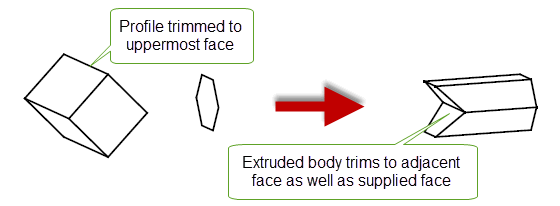

| |
Creating Extruded Bodies |
| <<< Creating Profiles | Chapters | Sweeping >>> |
Creation of extruded bodies is supported via PK_BODY_extrude. This function creates a body by linear extrusion of a profile body. The profile body may be a minimum body, a wire body or a sheet body. These profiles create extruded wire bodies, sheet bodies or solid bodies respectively. The start and end of the extrusion can be specified in a number of ways; in particular by intersection with other bodies.
The direction of extrusion is defined by a unit vector. The start and end of the extrusion (the bounds) must be ordered along this vector so that the start comes first.
Figure 38-1 Extruding a profile to create an extruded body between two bounding faces
There are several ways of defining the start or end of an extrusion:
|
The extrusion is bound by a copy of the profile at a given distance from the profile. |
|
For more information on these options, see Section 38.3, “Bound types”.
PK_BODY_extrude returns tracking information that shows which entities have given rise to entities in the resulting extruded body. For more information, see Section 38.4, “Tracking information”.
For an example of this functionality, see the code example in the
C++\Code Examples\Modelling\Profiling\Extrude
folder, located in
example_applications
in your Parasolid installation folder.
The following arguments are supplied to PK_BODY_extrude:
profile |
The profile to be extruded. See Section 38.2.1, “Profile types”. |
path |
|
options |
An options structure that specifies:
|
Several different types of profile body can be passed to PK_BODY_extrude, each of which creates a different type of extruded body. The supplied profile cannot be a general body.
A sheet profile must be a connected manifold sheet body. It may have multiple laminar boundaries.
The start and end of the extrusion are specified in the PK_BODY_extrude_o_t structure. Two bounds must be supplied, and they are both specified in the same way, as described in the table below.
For each bound (whether start or end) the following information is required:
bound |
One of: PK_bound_distance_c, PK_bound_surf_c, PK_bound_face_c, PK_bound_body_c, PK_bound_sheet_c, or PK_bound_none_c. The default is PK_bound_distance_c. See Section 38.3, “Bound types”. |
forward |
Specifies which side of the profile the bound lies. Use this to choose whether the profile should be extruded forwards or backwards. PK_LOGICAL_false The bound lies on the opposite side of the profile to the path (the extrusion is backwards). PK_LOGICAL_true The bound lies on the same side of the profile as the path (the default). |
distance |
For use with PK_bound_distance_c only, the (non-negative) distance. For start bounds, the default is 0.0. For end bounds, the default is 1.0. These default values produce a distance bound that starts from the profile itself and extrudes to a distance of 1 unit. |
entity |
For PK_bound_surf_c, a face or surface For PK_bound_face_c, a face For PK_bound_body_c, a sheet body or solid body For PK_bound_sheet_c, a sheet body
The default is PK_ENTITY_null, which should also be used if When supplied, the bounding entity must divide the extruded body completely from one side to the other. |
nearest |
If PK_LOGICAL_true: Use the nearest intersection for this bound (the default). PK_LOGICAL_false: Use the furthest intersection for this bound.
This option has no effect when |
nth_division |
If |
side |
Which side of the bound forms the first division if the bound intersects the profile. See Section 38.6, “Dealing with profiles that intersect the first division”. |
Rather than let Parasolid extrude a profile, there may be times when you have already created a body using a sweep or extrusion operation (for instance, a tapered extrusion created using PK_BODY_sweep and PK_BODY_taper), and you want to trim it using the powerful bounding functionality provided by PK_BODY_extrude. You can do this by supplying the body using the
extruded_body
option in PK_BODY_extrude_o_t. An example of the intended use of this option is shown in
Figure 38-2.
Figure 38-2 Supplying an extruded body for trimming
If you supply an
extruded_body
, then you should supply the profile used to create that body as the
profile
for PK_BODY_extrude. If the
profile
lies within the
extruded_body
(i.e. if the start bound is backward and the end bound is forward) then it should be an exact section that fully intersects the
extruded_body
. This lets you specify a region to include, and is necessary to resolve any ambiguities where multiple solutions are possible.
You can use
allow_disjoint
in PK_BODY_extrude_o_t to specify whether disjoint components can be returned by PK_BODY_extrude. By default, disjoint components are not allowed: if the resulting extruded body contains several components, PK_BODY_extrude returns PK_ERROR_disjoint. To return a single body containing several disjoint components in such cases, set
allow_disjoint
to PK_LOGICAL_true.
You can use
consistent_params
to specify whether or not the v-parameter of an extruded plane is aligned with the sweep direction of the extrude operation. By default, it is set to PK_PARAM_consistent_unset_c.
Figure 38-3 illustrates the result of an extruded plane when
consistent_params
is set to either value.
Figure 38-3 Extruded plane with its v-parameter aligned with the sweep direction
Note: If the result of the extrude operation is a cylinder and
consistent_params
is set to PK_PARAM_consistent_set_c, the seam of the cylinder will be aligned with the seam of its profile. |
If the supplied
profile
contains facet geometry you can control how the resulting extruded body is split and model edges are created using the
have_pline_angle
and the
pline_angle
options.
The
pline_angle
is the maximum angle between the polyline segments of the
profile
that will result in a model edge being created in the extruded body.
If the
have_pline_angle
option is set to PK_LOGICAL_true, and the angle between adjacent polyline segments, when viewed down the extrude direction, is greater than or equal to
pline_angle
then an additional model edge is introduced to the extruded body which splits the body at that position.
Note: If an
extruded_body
is supplied, the
pline_angle
option has no effect |
You can control the geometry types of the resulting body if the input body contains facet geometry only.
The
keep_as_facet
option controls the geometry type of the extrusion, and determines whether the result body contains only facet geometry, or a mixture of classic and facet geometry.
See Section 85.6, “Creating a mixture of facet and classic geometry”, for more information.
This section describes the different types of bound that can be defined.
The bound is produced by creating a copy of the given profile shifted along the path vector by the given distance. The distance must be non-negative. To extrude in the opposite direction to the path vector the forward field of the bound is set to PK_LOGICAL_false.
Figure 38-4 Extruding a profile a specified distance
|
Note: If you specify an extruded_body in PK_BODY_extrude_o_t, you should not use this type of bound. |
The bound is produced by trimming the extruded body to a surface. Either a surface or a face can be supplied. If a face is supplied then its surface is used, but divisions are not restricted to the region of the underlying surface that the face occupies. The surface is unaffected by the operation.
Figure 38-5 Extruding a profile to a surface
The bound is produced by trimming the extruded body to a face. If the face does not completely trim the extruded body, then adjacent faces are used to trim the body. The faces are unaffected by the operation.
Figure 38-6 Extruding a profile to a face
The bound is produced by trimming the extruded body to a sheet body or solid body. Parasolid selects suitable faces for bounding the extrusion. The body is unaffected by the operation.
Parasolid finds all collections of faces that may intersect the extrusion.
Figure 38-7 Extruding a profile to a bound created by intersection with a body
Like PK_bound_body_c (when given a sheet body), the bound is produced by trimming the extruded body to a sheet body. However, the sheet body itself is destroyed by the operation. All faces of the given sheet body are used in finding the bound.
This bound is exclusively for use when you specify an existing body using the
extruded_body
option, rather than let Parasolid create one from a profile. Using this bound indicates that the corresponding end of the
extruded_body
should not be altered by the extrude operation.
PK_BODY_extrude provides tracking information that shows which entities have given rise to entities in the resulting extruded body. Tracking is provided for both:
In any result body, a given entity may be considered to be both an extruded entity and a bounding entity, and so may be tracked from more than one source.
For extruded entities, the tracking information returned is as follows:
|
Each extruded face of the result body is tracked from the edge of the profile from which it is extruded. |
|
|
The extruded edge is tracked from the vertex of the profile. |
For all bound types except PK_bound_distance_c, bounding entities are created where the extruded body intersects a bounding body. The bounding entities are tracked from what they intersected. The nature of bounding entities created depend on the type of profile supplied:
|
Faces which are not swept from profile edges (i.e. not laterals) |
|
|
Edges which are not swept from profile vertices (i.e. not laterals) |
|
The tracking information returned for bounding entities depends on the nature of the bound:
If you extrude a wire profile and also specify an
extruded_body
, then each edge of the result body that is not a bounding edge is tracked from the edge of the given extruded_body in the same position. This is because the tag of the edge of the result body may not be the same as the tag of the edge of the
extruded_body
.
A given bounding entity (such as a sphere) may intersect the extruded body at several places. When this occurs, use
nth_division
and
nearest
to determine which intersection should be used as the bound. The way that intersections in the bounding body are numbered also depends on the value of
forward
.
When
nearest
is PK_LOGICAL_true, divisions are numbered from the profile outwards, so that the first intersection is the nearest. The reverse is true if
nearest
is PK_LOGICAL_false, as shown in
Figure 38-8.
Figure 38-8 Using
nearest
to reverse the direction of division numbering
When
forward
is PK_LOGICAL_false, the extrusion occurs in the opposite direction, and divisions are numbered as shown in
Figure 38-9.
Figure 38-9 Division numbering when extrusion occurs in the opposite direction
Bounds can only occur at a division that goes right across the extruded profile. Intersections with the extruded profile that do not completely cross the extrusion are ignored.
In cases where the profile (or a distance bound from the profile) intersects the first division on a bounding body or face, extruding the profile may yield several different solutions. Figure 38-10 shows an example (in cross-section) where several extrusions are possible as a result of extruding a profile from the first division of a bounding body.
Figure 38-10 Multiple solutions possible due to profile intersecting division
You can use the
side
field in either the start or end bound to specify which side of a bounding entity should be in the first division when extruding. This field can take the following values:
Figure 38-11 illustrates the bodies that would be extruded from the example in Figure 38-10 for each of these values.
Figure 38-11 Specifying which solution should be used
Figure 38-12 shows a number of additional examples. In each one, the start bound is left at its default setting: a distance bound of 0. The end of the extrusion is bound by the bounding body shown. The examples demonstrate the different extruded bodies that can be created using different values in the
side
field of the end bound.
Figure 38-12 Extruding using profiles that intersect the bounding body
In the following examples, only an end bound of type PK_bound_body_c is supplied. The profile and the bounding body are as shown in Figure 38-13. The path is from the profile directly towards the bounding body. Resulting extruded bodies are shaded.
Figure 38-13 Profile and bounding body used in subsequent examples
Figure 38-14 Extruding to the nearest and furthest bounding faces
Figure 38-15 Extruding in to the second nearest and second furthest bounding faces
In the following examples, both a start bound and an end bounds are specified. Both bounds are of type PK_bound_body_c. The profile and bounding body shown in Figure 38-13 are used.
In Figure 38-16, the profile is extruded from the nearest division to the furthest division. Note that the profile is not contained in the resulting extrusion.
Figure 38-16 Extruding from the nearest bounding face to the furthest bounding face
You can achieve the same effect by placing the profile between the bounds and extruding as far as possible in each direction
Because the start bound must come before the end bound, if you request start and end bounds at the same division, the end bound that Parasolid chooses is at the first division after the start bound, as shown in Figure 38-17.
Figure 38-17 Extruding to identical start and end bounds
Figure 38-18 demonstrates extruding across an intersection that does not go right across the profile. In such cases, the intersection is not considered to be a true division. Note that the extruded body could be further modified by setting the
side
field in the start bound, as described in Section 38.6, “Dealing with profiles that intersect the first division”.
Figure 38-18 Extruding across an incomplete intersection to the nearest bounding face
If you extrude a wire profile to create a sheet body, each extruded face may intersect with a bounding body a different number of times. This can lead to different result bodies, depending on the division that you choose to extrude to.
Figure 38-19 shows an example in which a square wire profile is extruded until it intersects a cylinder with a diameter that is equal to the length of an edge in the profile. In this example, some faces intersect with the bounding body once, while other faces intersect twice. You can produce different results, depending on whether you select the first or second division.

Figure 38-19 Specifying different divisions when extruding wire profiles
| <<< Creating Profiles | Chapters | Sweeping >>> |